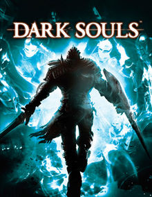

Dark Souls is een actierollenspel computerspel uit 2011 ontwikkeld door FromSoftware en uitgegeven door Namco Bandai Games voor de PlayStation 3, Xbox 360, en Windows.
Dark Souls is de opvolger van Demon's Souls en het tweede deel in de Souls-serie computerspellen. Het spel begon onder de codenaam Project Dark. Dark Souls werd in eigen beheer uitgebracht in Japan in september 2011, en wereldwijd door Bandai Namco de volgende maand.
Het spel kreeg twee opvolgers; Dark Souls II en Dark Souls III. Dark Souls ontving lovende recensies, en wordt beschouwd als een van de beste computerspellen ooit gemaakt. Critici prezen de diepe gevechten, ingewikkelde wereldontwerpen, en de diepgewortelde tradities. De moeilijkheidsgraad werd verschillend ontvangen. De Windows-versie ontving lagere cijfers vanwege technische problemen, zoals bugs en vastlopers.
FromSoftware maakte in april 2013 bekend meer dan 2,37 miljoen exemplaren te hebben verkocht.
Persoonlijk vind ik dark souls 1 de beste van de serie. Het level en monster design is naar mijn mening bijna perfect.
learn more .
